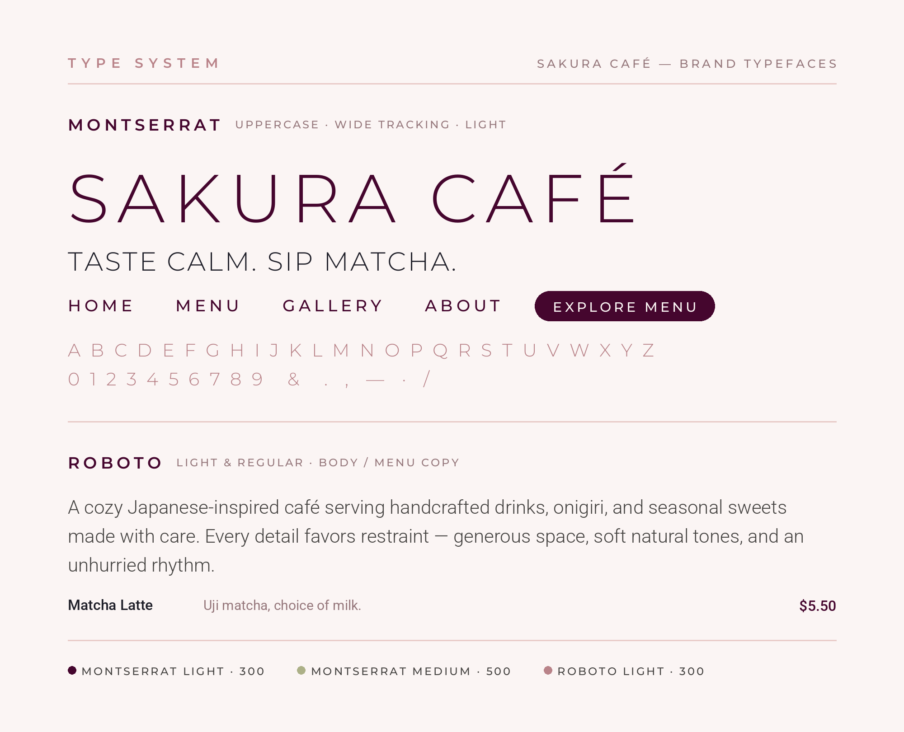
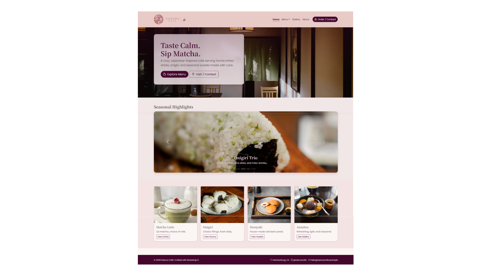
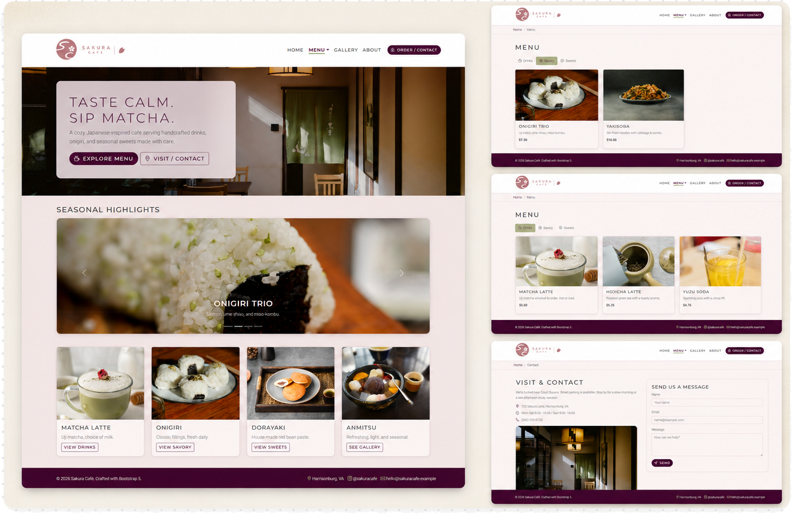

Sakura Café is a branding and website design concept rooted in Japanese aesthetics. The project explores visual identity — logo, color palette, typography, and layout — through the lens of cultural storytelling and quiet elegance.
A concept project pairing brand identity with a fully built, responsive website — an exercise in carrying one aesthetic vision from logo all the way to live code.
Designing Calm.
The concept leans on Japanese design principles — ma (the beauty of negative space), wabi-sabi (warmth in the handmade and imperfect), and the fleeting seasonality of sakura. Every decision favors restraint: generous white space, soft natural tones, and an unhurried rhythm, so the brand feels like the café itself — a quiet place to slow down.
Logo & Mark
Sakura Café logo systemThe identity combines a softly structured wordmark with a circular café mark built from the letters S and C. Cherry blossom and cup-inspired details connect the symbol to the café experience while keeping the overall mark simple enough to work across signage, packaging, and digital applications.
Typography

Montserrat carries the brand's voice — set in uppercase with wide letter-spacing that echoes the spacing of the Sakura Café wordmark. It runs light and airy at display sizes for a calm, editorial feel, then steps up to a medium weight for navigation and buttons, where legibility leads. Roboto Light handles body and menu copy, keeping longer text clean and unobtrusive. Together they feel modern and quiet — structure from the caps, softness from the light weights.
Color System
Crimson Violet
#45062E
Dusty Rose
#B98389
Dry Sage
#ACB087
Snow
#FBF5F4
Almond Silk
#E8CAC7
The palette is drawn from a spring tea garden. Deep Crimson Violet provides grounding and contrast, while Dusty Rose and Almond Silk bring warmth. Dry Sage introduces a subtle matcha note, and soft Snow creates a quiet foundation that allows the food and photography to carry the color.
A site that breathes.
A multi-page responsive site — Home, Menu, Gallery, About, Contact — built in HTML/CSS with Bootstrap. The homepage opens on a full-bleed interior photo and a two-word invitation, "Taste Calm. Sip Matcha," then eases into seasonal highlights. The menu splits into Drinks, Savory, and Sweets for fast scanning, with photography doing the selling throughout.


What I took away.
"Designing Sakura Café taught me how much restraint shapes a mood — that negative space, pacing, and a tight palette can communicate calm as clearly as any words. Carrying one vision from logo to a living, coded website was the most complete a project has ever felt for me."